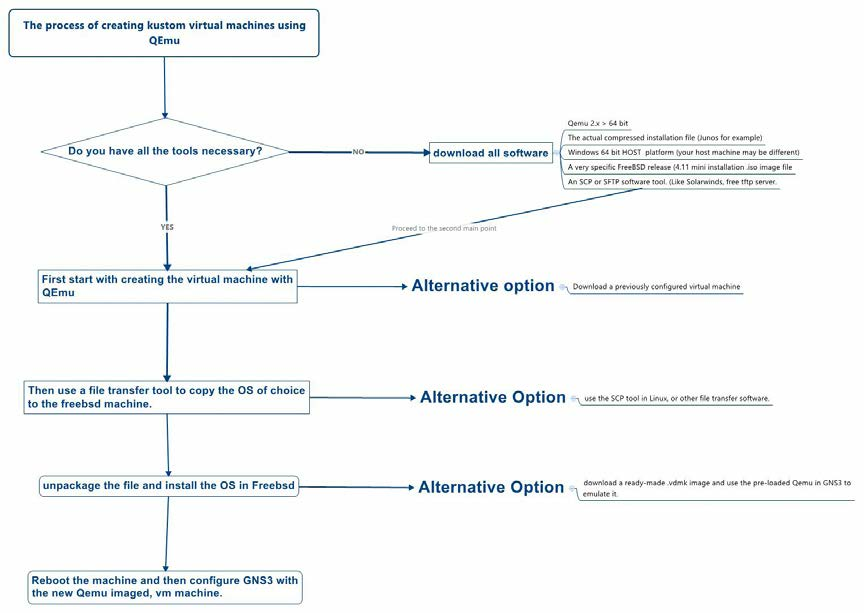

GNS3 (Graphical Network Simulator) is the best open source Network simulator that can be used while setting up a computer network. GNS3 works by consuming real Cisco IOS images which are emulated using a program called Dynamips. Hence it provides real time experience to the user and serves many of the network engineers today to design and collaborate their networks.
Using GNS3 you can design and experiment multiple networks without having any dedicated network hardware. The key feature of this router simulator is that you will be able to connect real networks to virtual GNS3 labs! GNS3 simulator is available for Windows, MAC, and Linux platforms.
How GNS3 serves you?
- Design of high quality and composite network scenarios.
- Supports many Cisco routers and PIX firewalls.
- Simulation of simple Ethernet, ATM and Frame Relay switches.
- Communicating simulated network to the real existing networks.
- Packet capture using 'Wireshark'
In this tutorial I would like to explain How to Calculate an Idle PC in latest version of GNS3 0.8.6 running on Windows 7? The process of setting up anIdle PC value is the extreme basic step while working with GNS3. The concept of an Idle-PC is one of the basic problems that a beginner faces while getting started with GNS3.
What exactly is Idle PC value in GNS3?
While simulating your network in GNS3, there is a possibility for 100% CPU usage of your computer. This is due to the Dynamips, the core emulator, doesn't know when the virtual router is idle, or when it's executing tasks.
Idle PC value calculates the time when the IOS image is idle (not performing any task) and puts the router into an idle state (sleep mode).
Hence it significantly decreases CPU usage on the host without losing the virtual router's capacity to do real work.
Step By Step Procedure to Configure Idle PC Value
Well, let's get into the procedure to be followed for calculating a good idle PC value in 0.8.6. After installing GNS3 load your IOS image to GNS3 virtual router (this process is out of the scope of this article)
Step 1:
Once you have successfully loaded IOS to the router, create a topology
with a single router. Then start the router by clicking 'Start/Resume
all devices' button.

Step 2:
Wait a little bit for the router to settle down. Double click on the router and verify that it has completed initialization.

Step 3:
Openthe task manager (Shift + Control + Escape) and look at the CPU usage,there's a probability that it may reach 100%.

Step 4:
Go to the main window of GNS3, Right click on the router and select Idle PC

GNS3 will now calculate better Idle PC Value for your host (It may take a title bit time).
Step 4:
After the calculation GNS3 gets prompted with available Idle PC values.
Probably better idle pc values are marked with an asterisk symbol (*). Choose one of the values with an asterisk.

You'll get a confirmation that idle pc value has been applied.

Now Idle PC value has been successfully applied!
Once Idle PC value has been applied you may notice a striking drop in the CPU usage.

Navigate to Edit -> IOS images and hypervisors or hit Ctrl+Shift+I together

You will find the calculated Idle PC value there under Settings.

Same value will be applied automatically next time when you add the same router.
Common GNS3 Idle PC Problem: "Could Not Find Asterisk in the Idle PC"
This happens commonly, what do we do if there is no asterisk symbol near to idle PC value?
Insuch situations,stop the simulation,start again and repeat the above
procedures. You should repeat this process until CPU usage goes down
to10-15%.
NB:- You may also select values without Asterisk symbol if it reduces CPU usage considerably.
Now you can start creating new topologies and explore with GNS3. Hope you guys got the complete idea about GNS3 Idle PC setup and get rid of the100% CPU usage.
Related posts:
- Connect GNS3 to VirtualBox
- Connecting GNS3 to Real Networks
- Connect GNS3 to Internet via Host Wi-Fi
- Connect Cisco IOU to GNS3-1.1
- Setup Cisco Configuration Professional CCP 2.7 for GNS3 Router
6- Create a simple topology like the following:
Let's run some devices and configure ASA keys so you can play with it.

Turn the firewall features on with both commands from configuration mode. Make you configure at least one interface and save the configuration. Save Project in GNS3. After that just reload the firewall:
Configure Interface Inside and Outside settings:
en show ver conf t inter g0 ip add 172.31.255.253 255.255.255.0 nameif OUTSIDE security-level 0 description LINK->EDGE->ISP no shut exit inter g1 ip add 10.200.0.254 255.255.255.0 nameif INSIDE security-level 100 description LINK->DataCenter no shut exit
Copy the configuration and enter the licenses:
copy running-config flash:startup-config activation-key 0x4a3ec071 0x0d86fbf6 0x7cb1bc48 0x8b48b8b0 0xf317c0b5 activation-key 0xb23bcf4a 0x1c713b4f 0x7d53bcbc 0xc4f8d09c 0x0e24c6b6 copy running-config flash:startup-config reload
Note that this will take some time, like 5 minutes, and when you reload the ASA it will take some time again so be patient.
After the reload, check ASA licensing features with:
# show version
Here is the output:

The Definitive QEmu guide (Source Origin: The Definitive QEmu Guide for GNS3 ver1.pdf
The Definitive Guide to QEmu and running Kustom VM Machines for GNS3
By The GNS3 Assist Team
With Special Guest Star: Ankur J. Mallik
2007-2014 GNS3 Technologies Inc. All Rights Reserved.
In this document, you will find answers to the most sought out questions in the new GNS3 Jungle community.
Specifically, what is the BEST way of creating Kustom virtual machines with QEmu, VirtualBox or VMWare?
How can I load a switching and routing vender (like Juniper) onto one of these virtual machines? How does GNS3 facilitate the use of such images in the current topology structure?
DISCLAIMER: At this point, the GNS3 Technologies Inc., holds firm that all software used in the topology is the sole responsibility of the user. All software licenses and keys are provided by the client. GNS3 Technologies Inc. is not in the business of helping users with pirated material. Our business model is helping users to create topologies that will educate, train and test actual real production networks. Having said that, it is ASSUMED you are in compliance and that all related software meets local and federal laws and regulations in its proper use. It is the user that takes the risks and reaps the benefits of such endeavors.
Having said all that, this document is really about two critical aspects:
- Mastering QEmu within the scope of making sure your virtual machine is compatible with the QEmu version inside GNS3.
- Installation of a non-Cisco based OS (like Juniper).
Many components within this section deal with file transfers and un-packaging zipped files that are natively done with tools in a typical Linux distro. For Windows users, there is a learning curve to using these tools, but once mastered, opens up other possibilities.
The BEST way to create Kustom virtual images
Based upon how long GNS3 has been available, and the growing throngs of new users, 75 percent of all users are students and learners of the Cisco CCNA track. Getting past that tier, there is only 25 percent that are CCNP and CCIE COMBINED! It is in this sobering fact that true democracy dictates to write for the majority. The reasons for pursuing such skill-sets most likely is for 'the pursuit of happiness' to which each person consciously chooses to follow this path as a means to make an honest living in the world of network administration and cyber intelligence.
- CCNA: Cisco Certified Network Associate
- CCNP: Cisco Certified Network Professional
- CCIE: Cisco Certified Internetwork Expert
I can't think of a better way to influence new users both young and old, than to embark on these new trials and tribulations by learning how to create new virtual machines and getting them to work with the GNS3 platform. And all three possibilities, Virtualbox, VMWare and QEmu are all excellent, but this document is geared to the majority of the user base within the community. As you have probably figured out, there are 'shortcuts' in this whole process to which I agree exist. Having predefined and working images in native VMWare and Virtualbox is possible, but I wanted the new user base to get familiar with QEmu since it really is QEmu working in the background for GNS3 as well as Virtualbox. QEmu is the 'x' factor in getting a topology as close as possible to your live production network. And the time you put in will make up for it in the long term when you need your virtual topology to test out a very specific objective that is non-Cisco. So obviously, QEmu is the BEST way to go with Kustom virtual machines. By Kustom with a 'k' I am speaking about your very unique build.
How can I load a non-Cisco IOS onto one of these Kustom virtual machines?
With Juniper, it is one of the most sought out virtual machines in the community. And following various You-tubes and blogs, may mislead you in the proper way to install and support Juniper OS. In comparison with Cisco, there are Cisco images that are readily used and acknowledged from Cisco since their own employees and organization use the same tools. With Juniper, they seem to have a very stand-off approach which makes no sense to me personally, but since Juniper virtual machines are considered 'unsupported' by Juniper, it leaves those students and even network professionals vexed. To not respond to market changes and pressures that drive new business is Juniper's choice. But sooner, rather than later, Juniper should embrace the fact that so many network engineers as well as students see value in their product and should be a little more open to supporting their own software in this venue. Having said all that, it is assumed that unsupported software from a particular vender means the user takes on the responsibility of keeping up to date with any policy changes to non-Cisco software and services. Wow, I spent 4 pages going over these two points, but I believe understanding the scope and risks will cut down on a lot of questions in a community that have over 100,000 network professionals of varying talents and experiences. My great grandfather would roll over in his grave if he knew how quickly the world changes! In the world of network professionals, it changes on a daily basis.
These are the steps involved with creating Kustom images. Please examine closely the following work flow image:

I tried to break down the complexity and boil plate the topics to four broad processes:
- Create the virtual machine with QEmu
- File transfer from one virtual machine to another.
Step two actually has another option of creating a CD image (an .ISO) of the jinstall-x.x.x file, and then using QEmu to define that .ISO image as a CDROM storage device. If you have difficulty getting your virtual machines to transfer files between each other, I suggest skipping this step and going straight to the Appendix as the defacto 'work around' if you have any problems with your personal HOST's virtualbox, VMWare or Loopback interfaces in Windows 8.1 or higher.
- Unzipping the IOS package and installing it within the Kustom virtual machine.
- Configuring GNS3 to call that image.
Obviously, if you already have the image with the IOS running on top of it, you only need to know that the latest QEmu (specifically GNS3's version) can call .vdmk images DIRECTLY. It literally took me 5 minutes to get a running Kustom VM running in GNS3. But the purpose of this document is about creating our own, so please follow closely to the following sections.
Before I get into how to do this, I need to make a well-deserved shout out to Ankur J. Mallik, for his outstanding knowledge of QEmu. You are the king of Kustom builds and I thank you kind sir! I hope you get a ton of business and you continue to prosper. Thank you for your kind words and generosity!
Okay, onto the first section:
Let's begin:
Setting up FreeBSD base for Junos to run on top
- Create a Qemu disk image using Qemu-img.exe
For the beginner: QEmu stands for Quick EMUlation. The Official mascot is an EMU. A quick Google search on EMUs is the following: http://en.wikipedia.org/wiki/Emu. So if you feel comfortable pronouncing QEMU as (kee-mu) or (que-emu), it doesn't matter. In this example, we will be creating a FreeBSD virtual machine using QEmu for the express use of a Juno OS.
The first thing to do is get a little familiar with how QEmu runs.
With QEmu, there is no 'official' installation package. For simplicity, you should run all commands within the Qemu directory. That also means, creating images within the same directory. So if you download QEmu in 'Downloads' folder and you extract QEmu, then when you open your command or terminal app, you need to be in the QEmu directory.
Once you are in the Qemu directory, for example: C:\Downloads\Qemu >, you are now ready to run the first of many commands. You will need to run your command/terminal as administrator! Command:
qemu-img.exe create -f qcow2 juniper-backend.img 12G
Explanation: Creates an image disk named juniper-backend of 12 GB. -f stands for format.
- Fire up the machine with Command:
qemu-sytem-x86_64w -m 1024 -hda juniper-backend.img -cdrom 4.11-RELEASE-i386-miniinst.iso -boot d -localtime
Explanation:
- -m > Size of RAM in megs
- -hda > Use file as hardisk > points to the img file we created
- -cdrom > use the mentioned iso as cdrom
- -boot d > boot with CDrom
Notes: (01/03/2015) Iso from BSD: FreeBSD i386 Iso Debian Jessie Netinst Iso
Note: watch the spacing... it's supposed to be all one command, but sometimes there is an annoying space between the end of the line and the next line. If it doesn't start up immediately, you may have to remove a space where the command wraps around to the next line:
See the spacing on the far left side of the first command? QEmu will not run. You will have to go back and delete that space. The second time I ran this command, it ran fine.
Now let's dive into installation. At the disk allocation menu (below) hit A to use entire disk. Q to finish.
Note: FreeBSD is a little different in formatting the hard disk as opposed to a Windows format. The Windows Setup program usually formats the disk to NTFS and handles the primary partition setup and configuration. With FreeBSD, there are options.
You can use Standard or Express. Most videos out there use Express and that's fine. If you hit Standard, it will then ask you a bunch of questions regarding the FreeBSD installation. Either way it's fine... it's partitioning the disk drive that's REALLY important. Either Express or Standard will take you to the next screen.
Select A in the following screen is telling FreeBSD to use the entire hard disk. Since we are dealing with a virtual machine, it will ONLY format the space that QEmu created in the previous step. So it's okay to hit the 'A' and use the entire hard disk on your new virtual machine. Also, by hitting Q, you are quitting this area of the allocating the hard disk and you need to exit back to another screen that is prompted in the next step. So hitting Q doesn't let you leave the actual installation, it gets you out of the immediate area for allocating the hard disk.
Do you see the second line? It shows where the partition starts and ends and sets the subtype for Freebsd. When you hit 'Q', you will be brought to a similar looking menu, but your next step will be to manually create a partition table within this Freebsd space. See next screenshot.
Go with the Standard MBR (no boot manager).
Create a partition table by hitting "C". A small window pops up and will require you to enter the size of this particular partition. Follow the screenshot closely. In other you-tube videos and posts, some people choose various sizes for the partition. The following are recommendations. If you have experience with Freebsd or with installing Junos, you know you can change these values. But for new users, you want to be a little generous in your partitions to ensure your image will boot up after all this work.
In this screen shot, the user pressed 'C' and then typed in '4028MB'. This represents the first partition to have a little over 4 G of space out of a 12 gig virtual hard drive.

In this next screenshot, we have only two choices. A file system (FS), and a swap partition, (or S). This first partition will be a file system partition.
The user literally pressed '/'. That indicates a root partition.
You will need to repeat these steps with one small variation. 4 of the 5 partitions will be a file system, while one of them will be a swap partition. As mentioned before, the size of each partition has varied, but the overall partition structure is important. Also, your /var directory MUST be over 2G. I have had some unpredictable things with the virtual machine because there was not enough space for the Juniper system to function properly.
When all these partitions are created, hit Q to finish and exit out.
The next step is to select a 'minimal' installation. The screenshot shows the minimal installation section, but when you exit out of the FreeBSD Disklabel, the option is found by scrolling down. Make sure you scroll down until you see 'minimal'.

As you can see, the screenshot shows 'option 4' at the top. That means the user had to have scrolled down to get to the minimal install option.
After you hit 'okay', you will then be presented with where to install FreeBSD. In this virtual machine, you already defined the -cdrom option in Qemu to mount the FreeBSD .iso image. So choose option 1, and hit okay.

In this screenshot, you get a nasty warning about losing data. This is a new install so just click 'yes'.
This shows up after the installation creates the partitions and copies over the files and starts up the configuration. You have the option to configure the FreeBSD here and some people choose to change the root password by clicking yes. But it's not really necessary for this exercise. We will choose no.
FreeBSD, blithely installs the files and this part of creating a FreeBSD virtual machine with QEMU is over for now.
File transfer from one virtual machine to another
This one was a difficult issue, because in the YouTube, and other posts, the method of file transfer was using SCP. The problem is, FreeBSD and the Debian Jessie Virtual machine I had were throwing up errors with the types of security. So I abandoned that and asked for a simpler way to transfer files. BEHOLD, an SCP/TFTP server. Of course there are many to choose from, but the one that worked for me was the free Solarwinds SCP server. If you have read my other Solarwinds integration manuals, you might be thinking "Hey Matt, why do you always choose Solarwinds' products?" And here is the honest answer, the controls are a little more intuitive than other products so I am a little more comfortable with the interfaces. I love clicking on things and the better networking tools look more like a video game or a very funny you-tube, the more I am likely to use it. Others may prefer different tools. Here is a link: free_tftp_server.aspx
When you get to the site, there are a couple of 'gotchas'!
You will need to fill out a small form.
They will ask if you want a bundle of trial software with this. I always just click no and go to the download page.
The following are the screenshots needed to setup your super file transfer to your VM machine:
Configure a user account that has permission to access the tftp folder.
Notice the root directory to share your file is pointing to the Qemu directory. Really it can be anywhere, but we are keeping all the files in Qemu for ease of reference. That's really all there is to it with setting up your TFTP server. You will have to know your host machine's IP address because it will fulfill the role of 'tftp server' when you enter the scp command, but we'll get to that in a minute. The next step is to fire up your FreeBSD and add a couple of options in QEmu.
Unzipping the IOS package and installing it within the Kustom virtual machine
We are back at the command line, and we are now going to show off the versatility of QEmu with Command :
qemu-system-x86_64w -m 1G -hda juniper-backend.img -boot c -localtime -net nic,macaddr=00:aa:00:60:02:02,model=e1000 -net user
Explanation:
- -boot c > boot with 1st hard disk
- -net nic > Create a new nic card with mac addr , model
- -net user > Use the user mode network stack
So think about how cool this is. You are emulating an image file and setting another emulation for the Network Interface Card!!! Now, your machine has the ability to network. The key concept here is to note the standard 'e1000' driver as well as using the 'user mode' network stack.
But wait! There's more! The next step is to configure your new NIC card inside your QEmu session with an IP address. Please look at the following screenshots closely:
After your QEmu is booted up, you need to enter your root user name and password. The default is 'root' and the password is blank (no password). When you get the "#" you are now rooted into the box. Enter this command:
dhclient em0
This is the command to request a DHCP address on the first Ethernet interface 'em0'.
You can verify it has an IP address by entering the following command:
ifconfig
If you look closely at the previous screenshot, you'll see a place that says 'inet 10.0.2.15'. That SHOULD look familiar with Virtualbox users since that IP address is derived from a running DHCP service for Virtualbox. That's pretty awesome. Now that your FreeBSD has gots its network on, it's time to run the next command.
scp matt@192.168.1.65:\jinstall-12.1R1.9-domestic-signed.tgz ./
This command, is the MOST difficult to master. It's so simple, but you need to nail down all the variables to get this to work:
- First of all, matt is my user account. So obviously you need to know the user account for your TFTP account on your host machine.
- The IP address of your HOST machine is your machine running TFTP. Make sure the service is running and your user name matches the permitted account in the TFTP.
- the 'jinstall-12.1R1.9-domestic-signed.tgz' is just an example. Your zipped file
will have a variation on the build number.
I'm not going to lie, this one will take some practice using the 'scp' command. But it does work! I've tried so many ways of using this, that this is the easiest way to transfer files from your host machine into your virtual machine in particular to FreeBSD.
If you thought THAT was a little difficult, hold on to your britches because the next section is really the hard part of the whole process.
- Initiate Junos package installation
Command:
pkg_add -f jinstall-12.1R1.9-domestic-signed.tgz
WARNING!!!: If initiating this command gives you an error such as "This doesn't look like a tar archive" Error in initiating "install_pkg" etc, that means your Junos file has been altered, don't worry, that doesn't necessarily means that it's corrupted. It means you have a zipped file within a zipped file. Furthermore, since there are variations of packages that are wrapped with tools to install a specific build like Junos, you may notice other zipped files after the first unzipped command. If this is the case, please read the Appendix on what to do with all those other zipped files.
Remember, you are transferring a presumably extracted file you own. Since the actual jinstall file may be different, it's going to require some understanding of what type of file you are transferring. Is it already unzipped? Great! If not, I recommend reading the Appendix to figure out how to unzip a tar file.
// Do the following only if you get any of the above errors //
At this point you'll need to extract the jinstall-12.1R1.9-domestic-signed.tgz. I can't stress how important this one part is... if you get this error, you will have to do some remediation steps and figure out what the actual name of the file is. For me, the file was not labeled 'jinstall-12.1R1.9-domestic.tgz'... it was actually labeled 'jinstall-12.1R1.9-domestic.gz'. When I ran the command to unzip it into the new /var/tmp/j directory... I realized it did unzip the file, but the jinstall-12.1R1.9-domestic.tgz is now in /var/tmp/j! I changed directories back into the /var/tmp/j directory and then listed the files in that directory with 'ls'. Finally, the zipped file jinstall-12.1R1.9-domestic.tgz was there! I then ran the command from the previous and I extracted THAT file in the same directory. This ONE thing throws off so many users who are not familiar with FreeBSD and the commands. If none of that was clear to you, read the Appendix. On with the next command.
tar zxvf jinstall-12.1R1.9-domestic-signed.tgz
And then run a ls command to check if you see a file jinstall-12.1R1.9-domestic.tgz.
Note that the file name doesn't have the word "signed". This file comes out after extraction of the signed tgz.
Install the extracted tgz via the command: (where -f = force)
pkg_add -f jinstall-12.1R1.9-domestic.tgz.
If these commands don't run right the first time, it's possible your version of the 4.11 Mini install is missing some packages to complete these commands. It gets real dicey here because you have to be familiar with running a command called 'apt-get install' X. Where X is the program you needed to run some of these commands. And while your 4.11 Mini might be missing some packages, a guy next to you will download the 4.11 Mini and already have the package installed and have absolutely no problems finishing this. Welcome to the world of open source!
At this point, the Junos system files now have been installed. This will require a reboot of the machine to complete all Juniper package installation. Use halt and once the system is halted close it down. To halt a Qemu, you can use Cntl + Alt + 2. Or just click on the x in the upper right corner of QEmu.
The next command is:
Fire up the machine with serial enabled on telnet access
This will enable serial access via telnet on your host machine 127.0.0.1 on port 5501 and boot up the machine.
Telnet into the machine.
Once you are in there you'll see all base services and packages for Junos getting installed.
This will take a while. Grab a cup of coffee in the meantime. From here on out, the initialization of Juniper will take a lot longer but if you get the Juniper prompt, you know you have succeeded where others have failed.
Congratulations!
In conclusion:
As you can see, this exercise shows the real power of QEmu and although we used Juniper as a demonstration, integration of other switching and routing products are basically the same with QEmu. I really wish QEmu was more of a Honey Badger. Because QEmu really don't care what it emulates! It only mimics the hardware on which the software is intended to run.
I'd like to see more emulated ARM hardware as well as other proprietary systems. That will just make QEmu and GNS3 that more versatile and robust for all types of real networks.
Appendix A: Installing the jinstall file from an .ISO image.
Why am I putting in a 'work around' for transferring files with virtual machines? Simple! My windows 8.1 build does not work between a QEmu machine with a 10.0.2.15 IP address AND my Win 7 with SFTP/SCP server that has an address in the SAME subnet, even though I double and triple checked my Virtualbox, VMWare DHCP services are running. It became apparent to me to write up a work around to ensure you (the reader) are not left empty handed after going through 20 some odd pages AND NO EMULATED Juniper software!
If you have ever youtubed the juniper software and gns3, there is a video done by IE that covers this process, but it is a bit dated. For one thing, the QEmu has improved, so instead of the older QEmu commands in the video, you need to substitute with the QEmu.exe of your choice. Secondly, DeepBurn is free for 30 days. Be forewarned, at the time of this manual, the first mirror site where I downloaded my DeepBurn is really infected with viruses. Don't install it unless you know for sure you scan and removed the viruses prior to install. You can use other .ISO burners, but the steps are the same. You will need to get your 'jinstall-x.x.x' file and burn it as an .ISO image file. When that's done, you are ready to run this command in QEmu instead of performing a file transfer.
This command sets your hard drive to the "juniper-backend" hard drive image as well as set your cdrom drive to the newly created 'j10.iso' from your favorite burner.
- When you are logged into the FreeBSD, you will now mount the cdrom device with
this command:
mount /cdrom
- You will now make a directory to unzip the Jinstall file into with this
command:
mkdir /var/tmp/j
- You need to navigate to that new directory with this command:
cd /var/tmp/j
- Extract the jinstall.x.x.x file into that directory with this command:
tar zxvf /cdrom/jinstall-10.1R1.8-domestic-olive.tgz
Here is where I got really messed up. The command would not run... it would say 'no file found'. I ended up navigating back into the /cdrom directory and listing the contents of that folder with 'ls'. I found it actually said "jinstall-10.1R1.8-domestic-olive.gz". Difference was it was missing a 't' between the two named files. After I corrected the command by removing the 't'. I found ANOTHER zipped file inside the /var/tmp/j directory that MATCHED the .tgz extension. The remainder of the commands worked fine after that correction. You're never going to see that in any YouTube. It's probably ASSUMED that I know how to work with FreeBSD, but the reality is, I only care about FreeBSD just long enough to get my jinstall file extracted and installed... then ADIOS FreeBSD and hello JunOS!
- The next step is to create another new directory within the /var/tmp/j directory.
The command is:
mkdir pkgtools
- Navigate to the new pkgtools. The command is:
cd pkgtools
- You're going to extract the pkgtools.tgz into THIS directory with this
command:
tar zxfv ../pkgtools.tgz
- There is a 'bin' directory created. Navigate to that with this command:
cd bin
- You're going to copy a file called 'true' to the /checkpic directory.
cp /usr/bin/true ./checkpic
- Exit out of this directory:
cd .. # (don't forget to put a space between the d and the "..")
- Zip the pkgtools file with this command:
tar zcvf ../pkgtools.tgz *
- Exit the pkgtools directory:
cd ..
- Remove the pkgtools directory:
rm -rf pkgtools
- Zip the JunOS package with this command:
tar zcvf ../junos.tgz *
- Install JunOS:
pkg_add -f /var/tmp/junos.tgz
Note: this one part takes a LOOONG time... be patient. You will eventually see this screen:
- Once the JunOS file is installed, you need to run a command within JunOS. The
command is:
init 6
- Since the machine is rebooting, you will want to control QEmu by hitting this
key combination:
Cntl + Alt +2
- Then quit this QEmu session with this command:
Q
- You are now ready to launch the JunOS so that you can telnet into the juniper
OS. Use this command in QEmu:
This command now calls your juniper virtual machine with 512 Megabytes of RAM and establishes a serial port where you can then telnet to '127.0.0.1:1001'.
You will then see a screen like this:
It's not broken... it's actually running. You will need to get your favorite telnet app (like Putty or SuperPutty) and use the configured IP address and port number from the preceding QEMU command.
Once in there, you will finally see this on your desktop:
This screenshot shows the QEmu command, with the actual QEmu machine while I am telnett'ing with Putty. What was not discussed is on the second reboot of the Juniper OS, it boots up MUCH faster and I even get a console screen from the QEmu window.
As you can see, it's pretty involved to get all this working. Of course automating this process is 'gold' in the emerging SDN markets, but at least you know how to create kustom vm machines with or without Juniper and FreeBSD. You need to use QEmu to emulate the actual hardware a Routing and Switching vender uses. In this case, Juniper uses FreeBSD... why? I have no idea. Then, you need to follow the rules of the hardware to create devices on these vm machines that is compatible. Some users are just running QEmu commands without really understanding all the parameters. An old PC tech back in the 90s would readily identify the types of hardware since we used to install them in the chasis of older PCs. A new user would not necessarily understand all the devices that are emulated by QEmu.
If you don't understand that -cdrom is representative of an actual CDROM device, or that -m 256 represents 256 Megabytes of RAM, I also suggest reading an old A+ guide. For the rest of the old timers, this shouldn't be too hard to figure out.
The QEmu machine at the software level follows the protocol of the command syntax of the software itself. That seems obvious, but understanding the FreeBSD commands, meant for me to read, read, read all the documentation from the FreeBSD.org website to understand what the heck I am trying to do. When I was able to figure out the commands, I had a little more freedom to improvise. With all these steps, you will have to improvise and test. This definitive guide to QEmu is intended to show you how to use QEmu to emulate, using the most requested hardware and software from the GNS3 Jungle community. QEmu is not limited to just Juniper but can emulate many more processor architectures...
the following is just a sampling:As you can see, a vender only needs to find the right QEmu emulator that matches their architecture and then modify the aforementioned -cdrom .ISO or perform a file transfer within their own software and you are done!
GNS3 wants to help you integrate your solutions so I will give a brief shout out to the GNS3 Assist, GNS3 Integration and GNS3 Academy teams. If you have a need for us to integrate your environment as well as help you build out curriculum for your institution or corporate environment, send your request to Clinton Senkow, Director of Partnerships at: csenkow@gns3.net, and he will write up a complex contract to have us come over and train and integrate your platform with our open source software. My personal favorite sandwich is an Open Reuben and I prefer 4 star or better hotels...thanks!
Set Up GNS3 with Open-Source Routers (Source Origin)
January 14, 2014 - 3 CommentsGNS3 is a very popular network simulation tool that runs on the major operating systems: Windows, Mac OS, and Linux. GNS3 is primarily used to emulate networks of Cisco routers and is used by professionals studying for Cisco certification exams.
GNS3 supports Cisco router software images running on the Dynamips, (Dynamips is an emulator that was written to emulate Cisco routers), hardware emulation program. GNS3 also supports other hardware emulation and virtualization technologies that can run Linux virtual machines: Qemu and VirtualBox.

Our interest is to emulate networks of open-source routers and switches using open-source technologies. While there are many web sites and online tutorials dedicated to using GNS3 to emulate Cisco networks and Juniper networks, I found only a small amount of information about using GNS3 to emulate a network of Linux virtual machines running open-source routing and switching software.
In this post, we show how to install and set up GNS3 and VirtualBox to emulate a network consisting only of open-source routers and hosts.
Install GNS3
This procedure describes how to install GNS3 and its supporting software on a Linux host computer running Xubuntu 13.10. Procedures to install GNS3 in Windows or Mac OS are available in the Quick Start Guide for Linux Users and GNS3 documentation.
GNS3 can be installed using the Ubuntu Software Center but the version available in the standard Ubuntu repositories is not the latest version of GNS3. To install the latest version of GNS3, Dynamips, Qemu, and Wireshark, do the following:
Add the GNS3 PPA to the Xubuntu software repository, Update repository information and Install GNS3 package from new, updated PPA repository
$ sudo add-apt-repository ppa:gns3/ppa $ sudo apt-get update $ sudo apt-get install dynamips gns3 # In Debian, dynamips and gns3 are readily available for installation. # $ apt-cache search dynamips vpcs - virtual PC simulator for Dynamips dynamips - Cisco 7200/3600/3725/3745/2600/1700 Router Emulator # It seems dynamips is a non-debian package. Amdm does not mirror it. # Need to download it from nchc directly. Dependency: libc6, libelf1, # libpcap0.8, libuuid1. In gv, need to install libpcap0.8. # $ apt-cache search gns3 libcgns3.1 - CFD General Notation System library libcgns3.1-dbg - CFD General Notation System library gns3 - Graphical Network Simulator
Installing the GNS3 package also installs most supporting software.
I noticed the installer recommends two other packages be installed but does not install them because they are optional, so I installed them:
$ sudo apt-get install snmp-mibs-downloader wireshark-doc
Next I installed the virtual PC simulator program, vpcs which is in the same PPA:
$ sudo apt-get vpcs
Installation complete
We successfully installed GNS3. Next, we need to install software to support running the Linux virtual machines that will be managed by GNS3.
VirtualBox
Many users of GNS3 choose to use VirtualBox to run Linux virtual machines because, like GNS3, it works the same on Windows, Mac OS, and Linux operating systems. VirtualBox can also utilize the hardware virtualization support technologies available on most computers while Qemu can only access these features in the Linux operating system (via KVM), with restrictions. Access to hardware virtualization support makes very noticeable improvement in performance.
The procedures I demonstrate using GNS3 and VirtualBox on my Linux system should also be usable on computers running either Windows or Mac OS.
Install VirtualBox
When emulating nodes other than Cisco routers, GNS3 can use VirtualBox to manage the virtual machines that run linux (or other PC operating systems).
Install from Ubuntu Software Center
The easiest way to install VirtualBox in an Ubuntu Linux-based system (I am using Xubuntu) is to use the Ubuntu Software Center program. Search for VirtualBox in the Ubuntu Software Center and click on "install".
Install from downloaded package
The version of VirtualBox available in the Ubuntu Software Center is not the latest version available from VirtualBox's developer, Oracle. The version available from the Ubuntu repositories is good enough. You don't need the latest version. However, if you - like me - always want the latest and greatest version on your computer, follow the steps described below to install the most recent available version of VirtualBox. To install the latest version of VirtualBox, download the latest package from the Oracle VirtualBox web site. Then, in your File Manager, double-click on the .deb package you downloaded. The Ubuntu Software Center will automatically start and install the latest version VirtualBox from the downloaded .deb package.

In my case, I chose to install the latest version of VirtualBox, version 4.3, using the procedure described above. At the time of writing this post, the latest VirtualBox package was: virtualbox-4.3_4.3.6-91406~Ubuntu~raring_amd64.deb.
dkms package
The Oracle web site also recommends installing the dkms package, (Dynamic Kernel Module Support Framework), to ensure that VirtualBox is properly updated if the Linux kernel version changes during a system upgrade. To install the dkms package, execute the command:
$ sudo apt-get install dkms
Installation complete
After installation is completed, the Oracle VirtualBox virtual machine manager will appear in the Xfce menu under "System".
Initial GNS3 setup
In the Xubuntu start menu, GNS3 appears under "Education" and Wireshark appears under "Internet". To start using GNS3, click on the menu command:
Start -> Education -> GNS3
We see a setup menu wizard appear. Just click on the "OK" button at the bottom of the wizard window. We do not need any of these setting when working exclusively with Linux virtual machines in GNS3.
Now, we see the blank GNS3 application window. At this point, we still cannot use GNS3 because we need to create the virtual machines that GNS3 will use in the emulated network.
Download Linux virtual appliances
the GNS3 web site provides a set of prepared Linux appliances that can be used to emulate routers, servers, and hosts in a virtual network. Navigate to the Appliances page on the GNS3 web site and download the appliances you will use to create virtual machines in your network emulation scenario. For Qemu Appliances, navigate the next web page: GNS3 Qemu Appliances
For our simple tests, we will download two VirtualBox appliances from the GNS3 web site:
- Linux Core 4.7.7 (link)
- Linux Core Layer 3 switch with Quagga 0.99.22.4 and Openvswitch 1.11.0 (link)
After download the images, test them via:
# Performance is NOT very good, since we are running kvm within kvm. $ kvm -hda linux-core-4.7.7.img $ kvm -hda linux-core-4.7.7-openvswitch-1.11.0_guagga-0.99.22.4.img # Using "tc" account to login, exitcheck.sh command to shutdown.
Create virtual machines in VirtualBox
We must create virtual machines using the appliances we downloaded earlier. We need to create a new VirtualBox virtual machine for every node we plan to use in the virtual network.
The first virtual router
Start VirtualBox and then click the "New" icon in the VirtualBox VM Manager window to start the Create Virtual Machine wizard.

For the first machine, we will create the router VM. In the dialogue box, enter the name "Quagga-1". The VM Type is "Linux" and the Version is "Other Linux".

Then, click "Next".
Set the memory size. Change the value to 128 MBytes. This can be changed later if we need to.

Click "Next".
Choose the option to "Use an existing virtual hard drive" and then select the VDI file we downloaded earlier: linux-core-4.7.7-openvswitch-1.11.0_guagga-0.99.22.4.vdi.

Click "Create".
The virtual machine is now created in VirtualBox.

The first virtual host
To create the second virtual machine, which will be used to emulate a host computer in the virtual network, repeat the steps we used to create the virtual router with the following changes:
- The VM name is Host-1
- The memory can be reduced to 64 MB
- The appliance image is linux-core-4.7.7.vdi
Just as a check, to ensure we have the basic VM working, we will start it. Click on the Host-1 virtial machine in the Oracle VM VirtualBox Manager window and then click on the green "Start" arrow. The machine will start up and you will see a terminal window with a login prompt.

Additional virtual machines
To create more virtual routers and hosts, we use VirtualBox's Clone feature to create clones of the router and host virtual machines we previously created.
Click on the virtual machine you wish to clone, then choose the VirtualBox Virtual Machine Manager menu command:
Machine -> Clone...
VirtualBox will open a dialogue box asking you for the name of the new virtual machine. If you are cloning the Host-1 virtual machine, enter Host-2 as the new machine name.
Check the box, Reinitialize the MAC address of all network cards so that the MAC addresses on the new virtual machine's network interfaces will be different from the MAC addresses on the cloned virtual machine. This will prevent problems when using both virtual machines in the same virtual network. Then, click Next.

Then, you can choose the clone type: either a Full clone or a Linked clone. The Full clone creates a fully independent virtual machine with its own virtual disk image that is a copy of the original virtual machine. The Linked clone creates a smaller virtual disk image that is "linked" to the original virtual machine's disk image. This linked virtual disk image will contain only the changes made to the second virtual machine so it takes up much less disk space. The Linked clone is dependent on the original virtual machine and it will break if the original virtual machine is modified.
In our case, we should use the full clone type because we have lots of disk space and our disk images are very small (less than 30 MB), and we avoid the problems that can occur if we accidentally modify the original virtual machine that is the source of all the linked clones. Select Full Clone and click Clone.

Repeat this process to create more hosts with the name, Host-x, and more routers with the name, Quagga-x, where x is a number. In my case, I create a total of three hosts and two routers.

Set up VirtualBox devices in GNS3
Each virtual machine we created in VirtualBox needs to be set up in GNS3, so that they will appear in the GNS3 user interface. We need to update the VirtualBox preferences in GNS3. Open the Preferences dialogue box with the GNS3 menu command:
Edit -> Preferences...
Then click on VirtualBox in the preference list.

In the VirtualBox preferences panel, click on the VirtualBox Guest tab. In the VirtualBox Guest panel, first click on the Refresh VM List button to load the virtual machines available in VirtualBox. The describe the first VirtualBox virtual machine you wish to use in GNS3:
- In the Identifier name field, enter name of device as you want it to appear in GNS3 (choose same as in VirtualBox)
- In the VM list field, choose the VirtualBox VM from the drop-down menu
- In the Number of NICs field, choose the number of network interfaces
for the device:
- Hosts get 1 interface
- Routers get 8 interfaces

Now set up the console access for each virtual machine. The VirtualBox VMs must be configured to enable serial console access. The appliances we downloaded have this configuration enabled.
- Uncheck Reserve First NIC for VirtualBox NAT with Host OS
- Check Enable console support
- Check Enable console server (for remote access)
- Check Start in headless mode (without GUI)

Click Save to create the Host-1 VirtualBox device in the preferences panel.
Repeat for each of the other devices until all devices are created. The preferences panel will look like the screenshot below:

Create a new custom device symbol in GNS3
It is helpful to have a custom device symbol to represent the VirtualBox device running one of the router virtual machines. To create a new custom symbol, open the Symbol Manager dialogue box with the GNS3 menu command:
Edit -> Symbol Manager

Select a symbol you want to re-use (I chose the router symbol). Then, click on the ">" button to move a copy of the symbol over to the Customized Nodes box.

Now we see the router symbol in the Customized nodes box. Click on the new router symbol and change the Name to something descriptive, like "router-virtualbox", and Type to "VirtualBox guest".

The click the Apply button to make the changes. You now see a customized node, router-virtualbox in the Customized nodes box.
We do not need to create a customized node for the hosts. There is already a virtualbox host symbol in the symbol library: vbox_guest.
Click OK to close the Symbol Manager window.

Now, when you click on the Browse all devices button on the GNS3 user interface, the custom node, router-virtualbox is available.

Conclusion and next steps
After completing the procedure described above, GNS3 is prepared to set up a network that will include up to two Linux routers and three Linux hosts.
GNS3 provides a lot of functionality that we do not use when we work exclusively with Linux virtual machines as routers and hosts in the GNS3 simulated network. However, there are some specific details that users need to know when setting up and using Linux virtual machines to create a simulated network. In this post, we covered those set up procedures.
We will discuss the details related to using the Linux virtual appliances provided by the GNS3 project in a simulated network in the next post.
Using open-source routers in GNS3 (Source Origin)
January 25, 2014- 3 CommentsGNS3 can be used to simulate a network composed exclusively of open-source routers, switches, servers, and hosts.

In this post, we will investigate how well GNS3 works when we use it strictly as an open-source network simulator, without using Cisco or Juniper routers in the simulation.
Build the network in GNS3
We are using VirtualBox to run the Linux virtual machines in our simulated network. When using VirtualBox, we must prepare a VirtualBox virtual machine for each node we will use.
Let's use the virtual machines we already prepared in the the previous post about Set up GNS3 with virtual Linux routers. In this case, we will have five virtual machines prepared: three hosts and two routers.
After starting GNS3, add three hosts, two routers, one switch, and some ethernet links to create the topology shown below.

To build the topology, click on the Browse all Devices button to show the Devices panel. Use the following devices to create the nodes.
- router-virtualbox
- This is the custom node we created in an earlier post. Use this for the routers Quagga-1 and Quagga-2.
- VirtualBox Guest
- Use this for the host computers Host-1, Host-2, and Host-3.
- Ethernet Switch
- This is a basic switch provided by GNS3. Use it to creat the switch SW1.
Add network devices
First, click on the router-virtualbox device and drag it to the middle panel in the GNS3 window. After you drop it, a dialogue box appears asking which VirtualBox guest will run on this node. Choose the guest, Quagga1, which has a disk image with Tiny Core Linux, Quagga, and Openvswitch installed.

Now a router symbol with the label Quagga1 appears in GNS3.
Repeat this process for each device in the planned topology until we have three hosts, two routers, and one switch arranged as shown below.

Add network links
Click on the Add a Link button to set up links between the nodes in the network. The button will change to show a red stop sign with a white "X". This indicates we need to click the button again to exit the link-add mode when we are done adding links. GNS3 only supports Ethernet links between VirtualBox virtual machines so we do not need to select the link type. The default link type, GigaEthernet, will work correctly.
To add a link between two nodes, click on the first node, then select the port in the pop-up menu. Then click on the second link and select the port. The link is created. In this case, we will connect the two routers so that the link connects port eth7 on each router. If you are wondering which ports are already used, you can check in the Topology Summary panel in the lower right of the GNS3 window. In the Topology Summary panel, double-click on the node you are interested in to see which ports are already connected.

Now create the network topology shown in the screen capture below. Connect port eth0 on each device to the appropriate network element: Quagga-1, Host-1, and Host-2 all connect to switch SW1; Quagga-2 connects directly to Host-3.

Start the network simulation
Now that we have created the devices and links, we can start the routers and hosts in the network and configure them so we can perform some very basic tests on the networking software on each device.
Click the Start All Devices green arrow button on the GNS3 user interface. All the links will in network diagram turn green. All the nodes listed in the Topology Summary panel will turn green.

Login to all devices
Now, we log into each node using its console window.
You can start a console on any individual node by right-clicking on the node and selecting Console from the drop-down menu; or by clicking on a node and then clicking on the Console button at the top of the GNS3 user interface (it looks like a small terminal screen).
You can start all consoles at the same time by clicking on the Console connect to all devices command in the GNS3 Control menu.
Control -> Console connect to all devices
A new terminal window will appear for each virtual machine. Arrange the terminals on your desktop according to your preference. Hit the Enter key on each terminal to get a prompt.
The login for each virtual machine we are using in this example is
tc.
box login: tc

Now we are logged into each of the hosts and routers in the network.
Configure the network devices
We can configure each node in the network so that the routers can route traffic from one network to the other and then we will run a few basic tests to verify that the configuration works.
We will configure three networks and set up a dynamic routing protocol, OSPF, that will run on the network connecting the two routers together and pass network information from one router to the next.
Network 10.0.100.0/24
The first network consists of the hosts Host-1 and Host-2 and the router Quagga-1. We will assign this network the network address, 10.0.100.0/24.
On Quagga-1, enter the following commands to start Quagga and use the Quagga command-line-interface to configure the router's port eth0 with a valid IP address.
$ sudo vtysh box# configure terminal box(config)# interface eth0 box(config-if)# ip address 10.0.100.1/24 box(config-if)# exit box(config)# exit box#
On Host-1, enter the following commands to configure the eth0 interface on Host-1 and create a default route toward router Quagga-1 (which in this network has IP adress 10.0.100.1).
$ sudo ip addr add 10.0.100.2/24 broadcast 10.0.100.255 dev eth0 $ sudo ip route add default via 10.0.100.1
On Host-2, enter the following commands to configure the eth0 interface IP address and create a default route.
$ sudo ip addr add 10.0.100.3/24 broadcast 10.0.100.255 dev eth0 $ sudo ip route add default via 10.0.100.1
Now, each node on this network should be reachable by any other node on the same network. Host-1, Host-2, and Quagga-1 can all ping each other.
Network 10.0.200.0/24
The second network consists of the hosts Host-3 and the router Quagga-2. We will assign this network the network address, 10.0.200.0/24.
On Quagga-2, enter the following commands to start Quagga and use the Quagga command-line-interface to configure the router's port eth0 with a valid IP address.
$ sudo vtysh box# configure terminal box(config)# interface eth0 box(config-if)# ip address 10.0.200.1/24 box(config-if)# exit box(config)# exit box#
On Host-3, enter the following commands to configure the eth0 interface on Host-3 and create a default route toward router Quagga-2 (which in this network has IP adress 10.0.200.1).
$ sudo ip addr add 10.0.200.2/24 broadcast 10.0.200.255 dev eth0 $ sudo ip route add default via 10.0.200.1
Network 10.0.1.0/24
The second network consists of the routers Quagga-1 and Quagga-2. We used port eth7 on each router to create the link between them. We will give this network the network address 10.0.1.0/24.
We are already running vtysh on both routers.
On Quagga-1, enter the following commands to configure port eth7, set up OSPF in the network, and to export directly connected network addresses to the OSPF protocol so they can be shared with other routers.
box# configure terminal box(config)# router ospf box(config-router)# network 10.0.1.0/24 area 0 box(config-router)# redistribute connected box(config-router)# exit box(config)# interface eth7 box(config-if)# ip address 10.0.1.1/24 box(config-if)# exit box(config)# exit box#
On Quagga-2, enter the following commands to configure port eth7, set up OSPF in the network, and to export directly connected network addresses to the OSPF protocol so they can be shared with other routers.
box# configure terminal box(config)# router ospf box(config-router)# network 10.0.1.0/24 area 0 box(config-router)# redistribute connected box(config-router)# exit box(config)# interface eth7 box(config-if)# ip address 10.0.1.2/24 box(config-if)# exit box(config)# exit box#
Network configuration completed
Now we are able to pass data from any node on network 10.0.100.0/24 to any node network 10.0.200.0/24. We can verify this by using the ping command to verify that data can pass from Host-1 on network 10.0.100.0/24 to Host-3 on network 10.0.200.0/24.
On Host-1, execute the ping command and see the following results:
$ ping -c 1 10.0.200.2 PING 10.0.200.2 (10.0.200.2): 56 data bytes 64 bytes from 10.0.200.2: seq=0 ttl=62 time=0.000 ms --- 10.0.200.2 ping statistics --- 1 packets transmitted, 1 packets received, 0% packet loss round-trip min/avg/max = 0.000/0.000/0.000 ms
We see that traffic will pass in both directions between Host-1 and Host-3 through all three networks in this simulation.
Capture and analyze network traffic
We can set up GNS3 to capture data on any interface in the network. To start a data capture, right-click on a link in the network diagram and then select Start capturing from the drop-down menu1.

Then select which interface on the link you wish to from which you want to capture data. Note that you cannot choose an interface connected to switch SW1; only interfaces connected to running virtual machines can support capturing data.

Restart node to enable data capture
We see an error message pop up that says we must restart the node that has the interface from which you want to capture data before data can be captured. This is an inconvenient feature in GNS3.
To restart the node, right-click on the node Quagga-1 and select Stop in the pop-up menu. At this point we will also add a second data capture point so that we are capturing data on both interfaces on router Quagga-1, eth0 and eth7.
To start the router Quagga-1 again, right-click Quagga-1 and select Start in the pop-up menu. When the node completes starting up, start the console and reconfigure the node as previously described.
Note: When we restart Quagga-1 we lose the configurations we made because the TinyCore Linux appliances provided by the GNS3 project are read-only filesystems. This is related to the Persistence feature of TinyCore Linux that we will discuss, along with a remedy, in a future post. In this case, we will need to enter in all our configurations again for router Quagga-1.
We now know that we should define any data capture points before starting the simulation and configuring the network nodes.
Start Wireshark
Start Wireshark to see the packets at each capture point. To view the data being captured, click on the interface in the Captures panel and then right-click to see the pop-up window. Select Start Wireshark from the menu.

A Wireshark window will open up showing the data that is being captured on that interface. In this case, we are looking at the data captured on the eth7 interface on router Quagga-1. We see OSPF packets being exchanged between Quagga-1 and Quagga-2.

Save the project
The project topology can be saved for future use. Use the following menu command or press the Ctrl-S key combination to save the project.
File -> Save Project
Not all information related to the project is saved by GNS3. The data capture points are not saved. When you open the saved project, you must define your data capture points again.
Also, the node configurations are not saved and each node will need to be manually configured again when the saved project is started again. This is because we are using the read-only TinyCore Linux appliances provided by GNS3. In a future post, we will describe a procedure that creates persistent network configurations and saves them on each TinyCore Linux appliance.
Conclusion
We showed how to set up a network in GNS3 using only the open-source appliances provided by the GNS3 project. We demonstrated that the simulated open-source hosts and routers can be configured to pass data between themselves and to route packets from one network to another.
The GNS3 project provides Linux appliances that can be used as Linux switches, routers, and hosts. This makes it easier to use open-source software in GNS3 because the provided appliances are already configured to work correctly with GNS3.
When it is used exclusively to simulate open-source routers and hosts, GNS3 is provides similar functionality to, but is more complex to use, than other open-source network simulators. I understand that I have explored only a small portion of GNS3's capabilities. GNS3's main function is to emulate Cisco routers and using only open-source routers is not the normal GNS3 use-case.
This screen capture also shows that the GNS3 user interface can be modified by removing panels, or adding panels, as required back
Related posts:
- Set Up GNS3 with Open-Source Routers
- Open-source network simulator roundup
- GNS3: Qemu or VirtualBox?
- Open-Source Network Simulators
- Even more open-source network simulators
3 responses to Using open-source routers in GNS3
Trackbacks and Pingbacks:
-
Persistent configuration changes in
TinyCore Linux | Open-Source Routing and Network Simulation -
February 22, 2014
[...] the previous post about using GNS3 to simulate a network composed exclusively of open-source routers, switches, and hosts, we used the TinyCore Linux appliances provided by the GNS3 [...]
Persistent configuration changes in TinyCore Linux (Source Origin)
February 22, 2014 1 CommentTinyCore Download, or Old but stable TinyCore Download, is very suitable for devices like routers that require a higher level of security. All changes made to a running TinyCore Linux system exist only in system RAM and are lost when the system restarts or is shut down. Viruses or file corruption can be removed simply by rebooting the system. TinyCore Linux Info,
When used as part of an open-source network simulator, the TinyCore Linux appliance can be restored to a base configuration every time it is started. This means the same appliance can be reused in new simulation scenarios without having to clear configurations that may be left over from a previous simulation effort.
However, in some cases we may want to save the configuration changes we make. For example, we may wish to have a basic network configuration working at start time. Or, we may wish to build a complex simulation scenario that will be re-used by other researchers. In this post, we discuss the TinyCore Linux system architecture and how to save configuration changes.
TinyCore Linux architecture
The base TinyCore Linux architecture consists of two files: vmlinuz and core.gz.
The file vmlinuz contains the TinyCore Linux kernel. The compressed file core.gz contains the base TinyCore filesystem. When the TinyCore Linux system boots, these two files are uncompressed and loaded into the system's memory.
$ kvm -hda TinyCore-5.4.iso& # Inside the qemu window, press the terminal icon, we get an X terminal. # Inside this X terminal, $ find / -name vmlinuz 2>/dev/null $ ls -l /mnt/sda/boot # Poweroff TinyCore $ exitcheck.sh
Applications added to the base system are stored in the /mnt/sda1/tce/optional directory as compressed archive files1. During system boot, TinyCore Linux uncompressed and loads these files and directories into RAM if they are listed the file /mnt/sda1/tce/onboot.lst.
Notes: (12/19/2014) We only see the /mnt/sda/cde directory
with the onboot.lst file and optional subdirectory in it. Directory
/mnt/sda1 is empty! On the other hand, we see .filetool.lst,
and bootlocal.sh, etc., files in the /opt directory.
Configuration files created by the user are stored in the compressed archive file /mnt/sda1/tce/mydata.tgz. At boot time, TinyCore extracts the contents of this file into the $HOME and /opt directories - and any other directory specified in the hidden file, /opt/.filetool.lst.
The shell script /opt/bootlocal.sh runs after the system boot process is completed. The user may add commands to this script to create an initial configuration for the TinyCore appliance at startup (see the section on persistence, below).
Persistence in TinyCore
TinyCore Linux runs in RAM so all changes made while the system is running will be lost after a system reboot unless the user takes action to back up the configuration changes.
The TinyCore Linux filetool.sh script (in /usr/bin directory)
provides the backup function that supports
persistence.
The script backs up files created in the /opt and $HOME directories.
The script will also back up directories containing configuration files associated with
networking software like Quagga if those directories are listed in the
/opt/.filetool.lst file. Network configuration changes made using Linux
commands like the ip command cannot be saved. But, we can add these commands
to the /opt/bootlocal.sh shell script, which runs at startup.
Once you have created the network configurations you wish to save, by editing the /opt/bootlocal.sh script and/or saving the Quagga or Openvswitch config files, back up the configuration using the filetool.sh script as follows:
$ filetool.sh -b
When the system is running, you can restore the saved base configuration by running the command:
$ filetool.sh -r
Example: TinyCore appliances in GNS3 Open-Source Simulator
In the previous post about using GNS3 to simulate a network composed exclusively of open-source routers, switches, and hosts, we used the TinyCore Linux appliances provided by the GNS3 project.
As described above, we know that filetool.sh script backs up the directories listed in the file /opt/.filetool.lst. The filetool.sh script saves the contents of these directories in the compressed archive file /mnt/sda1/tce/mydata.tgz.
Look at the contents of the /opt/.filetool.lst file to determine what directories the filetool.sh script will back up on each TinyCore Linux appliance we plan to use.
Saving Host and Quagga appliances configurations
- Host appliance
On the Host appliances (in our example, it is the Linux Core 4.7.7 appliance from the GNS3 appliances web page), we examine the contents of /opt/.filetool.lst. On each Host appliance, in addition to the $HOME and /opt directories, we see we also save the configuration files for the DHCP client.
$ cat /opt/.filetool.lst opt home /etc/shadow /usr/local/etc/ssh /sbin/dhclient
- Quagga appliance
On the Quagga appliances (in our example, it is the Linux Core 4.7.7 Layer 3 Switch with Quagga and Openvswitch appliance from the GNS3 appliances web page), we examine the contents of /opt/.filetool.lst. On each Quagga appliance, in addition to the normal directories, we also see that the backup script will save the configuration files for the Openvswitch and Quagga programs.
$ cat /opt/.filetool.lst opt home /etc/shadow /usr/local/etc/ssh /sbin/dhclient /usr/local/etc/openvswitch/ /usr/local/etc/quagga /usr/local/var/quagga/
Host-1
Add the following commands to the /opt/bootlocal.sh file on Host-1 using the vi text editor2. These commands will run when the TinyCore Linux virtual machine starts.
$ sudo ip addr add 10.0.100.2/24 broadcast 10.0.100.255 dev eth0 $ sudo ip route add default via 10.0.100.1 $ sudo pkill udhcpc
Then execute the backup command:
$ filetool.sh -b
Host-2
Add the following commands to the /opt/bootlocal.sh file on Host-2.
$ sudo ip addr add 10.0.100.3/24 broadcast 10.0.100.255 dev eth0 $ sudo ip route add default via 10.0.100.1 $ sudo pkill udhcpc
Then execute the backup command:
$ filetool.sh -b
Host-3
Add the following commands to the /opt/bootlocal.sh file on Host-3.
$ sudo ip addr add 10.0.200.2/24 broadcast 10.0.200.255 dev eth0 $ sudo ip route add default via 10.0.200.1 $ sudo pkill udhcpc
Then execute the backup command:
$ filetool.sh -b
Quagga-1
Most of the network configurations on Quagga-1 are done in the quagga open-source router program. Quagga saves its configurations in the directory, /usr/local/etc/quagga. The TinyCore Linux appliance we are using is set up to save the contents of this directory3 when the filetool.sh script is run.
To configure router Quagga-1 and save the configuration, execute the following commands:
$ vtysh box# configure terminal box(config)# router ospf box(config-router)# network 10.0.1.0/24 area 0 box(config-router)# redistribute connected box(config-router)# exit box(config)# interface eth7 box(config-if)# ip address 10.0.1.1/24 box(config-if)# exit box(config)# interface eth0 box(config-if)# ip address 10.0.100.1/24 box(config-if)# exit box(config)# exit box# write box# exit $
Add the following command to the /opt/bootlocal.sh file on Quagga-1.
$ sudo pkill udhcpc
Then save the configuration
$ filetool.sh -b
Quagga-2
To configure router Quagga-2 and save the configuration, execute the following commands:
$ vtysh box# configure terminal box(config)# router ospf box(config-router)# network 10.0.1.0/24 area 0 box(config-router)# redistribute connected box(config-router)# exit box(config)# interface eth7 box(config-if)# ip address 10.0.1.2/24 box(config-if)# exit box(config)# interface eth0 box(config-if)# ip address 10.0.200.1/24 box(config-if)# exit box(config)# exit box# write box# exit $
Add the following command to the /opt/bootlocal.sh file on Quagga-2.
$ sudo pkill udhcpc
Then save the configution
$ filetool.sh -b
Shut down TinyCore
To power off a TinyCore Linux system, use the command:
$ sudo poweroff
To reboot a TinyCore Linux system, use the command:
$ sudo reboot
Conclusion
We now understand more about how TinyCore Linux works and we created a persistent base configuration for each node in our GNS3 example so that the simulated network is able to pass traffic between networks immediately after the simulation is started, without any additional configuration.
Application archive files have the .tcz file extension back
vi is the only text editor installed in TinyCore Linux back
as specified in the file, /opt/.filetool.lst back
How To Install GNS3 (Graphical Network Simulator) (Source Origin)
GNS3 is an open source, GUI Network Simulator. It can be used to simulate complex networks while being as close as possible from the way real networks perform, all of this without having dedicated network hardware such as routers and switches.
GNS3 provides an intuitive graphical user interface to design and configure virtual networks, it runs on traditional PC hardware and may be used on multiple operating systems, including Windows, Linux and MacOS X.
Who can use GNS3?
GNS3 will be used for network engineers, administrators and people who are preparing for certifications like Cisco CCNA, CCNP and CCIE and Juniper JNCIA, JNCIS and JNCIE. It can also be used to experiment features or to check configurations that need to be deployed later on real devices.
GNS3 includes exciting features, for instance connection of your virtual network to real ones or packet captures using Wireshark. Also VirtualBox support is included in GNS3 so that system administrators and engineers can take advantage of GNS3 to make labs, test network features and study for Redhat (RHCE, RHCT) and Microsoft (MCSE, MCSA) certifications etc.
How do i use GNS3?
To use GNS3, you must provide your own licensed images. Download the IOS images from the respective vendor site, upload it to GNS3 and start learning. You can find the complete list of emulated hardware devices by GNS3. Alternatively you can download and use non-copyrighted appliances provided by GNS3 team. Just download the appliances and import them to Qemu/VirtualBox/Vmware and start learning! You can't use these appliances on any copyrighted platforms such as Windows or Mac OS X.
Install GNS3 On Ubuntu 13.04
GNSs is available in default Ubuntu software center, but it may be a bit outdated. So grab the source files From SourceForge or gns3 and compile and install it yourself. Alternatively GNS3 team has a Ubuntu PPA to make the installation pretty easy and straight forward.
Add the GNS3 PPA to repository, Update the packages list, and install GNS using the following commands:
$ sudo add-apt-repository ppa:gns3/ppa $ sudo apt-get update $ sudo apt-get install dynamips gns3 # For Debian these two packages are ready to be installed: $ sudo apt-get install dynamips gns3
Configure GNS3
At the first time of GNS launch, a Setup Wizard will open. Click on the step 1(Number 1) to configure the path of network device images i.e IOS, Qemu, PIX etc. This is the path where you should store all your images.

Now the Preferences window will open. Define the path location of your images.

Click Apply and Ok return to previous menu. Click on the Step 2(Number 2). Click on "Dynamips link". Select the valid Dynamips path in the "executable path to Dynamips" box. Once you selected the path, click on the Test settings. If all seems ok, a green message will appear that shows "Dynamips successfully started".

Click on the Step 3(Number 3) to select the network switches/routers images.

At the time of writing this, i don't have any IOS images, so i left it blank. You should put your downloaded IOS, Qemu images in the folder that you have defined in the first step. Click Close to return back to previous window. Finally click Ok to close Setup Wizard.
Cisco IOS Download
New CCNP IOS Requirments for GNS3 (Source origin)
If you are considering using GNS3 for your CCNA or CCNP labs but are reluctant to do so as you have heard that it requires an official Cisco IOS copy this article is worth reading. First GNS3 will require an Official Cisco IOS but there are a number of ways that you can obtain a copy. You can of course purchase a copy from Cisco or you can purchase a used router such as a 2610 and copy the IOS from it and finally if you are an Internet savvy person you can find one online and download it free.
Before you start out buying anything or surfing the web you need to know what to look for. Cisco has made changes to their CCNA and CCNP exams, these exams are now using Cisco's IOS revision 15.0 or greater. Therefore you should strive to obtain this revision for your lab. Now for the bad news The Cisco 7200 is the only router within GNS3 that support the latest Cisco IOS release. The other routers will support 12.4 or earlier releases and if you plan on using them the 12.4 release is what you should look for as it supports a few command needed for CCNP studies that were not available in earlier releases.
All this being said I have done some searching of the internet and found the following site that may have more detailed information on the IOS releases available for router used in GNS3:
- C1700 All Released Versions
- C2600 All Released Versions
- C2691 All Released Versions
- C3620 All Released Versions
- C3640 All Released Versions
- C3660 All Released Versions
- C3725 All Released Versions
- C3745 All Released Versions
- C7200 All Released Versions
Additionally here are a couple of tips when installing a Cisco IOS into GNS3. First make sure you are using a uncompressed copy of the IOS, this will reduce the time it takes for GNS3 to boot the routing device. The Cisco IOS release is a .bin file example "c2600-adventerprisek9-mz.124-19.bin" and is compressed. In most cases if you select this file when setting up your IOS in GNS3 you will be prompted if you wish to decompress the file in this case answer yes, but in some cases you will to do this manually in the instances you can use WIN7 to unzip the file, as a .image file. Second make sure to check the Cisco site the find out the minimum memory requirement as GNS3 is seldom correct in the value it allocates. This will cause the router to not boot properly or not at all. Lastly be sure to obtain an optimal IDEL-PC value as this will reduce the processor utilization by the routing devices in you labs.
There are many other tricks to using and optimizing GNS3 which I will cover in upcoming articles but if you chose to use GNS3 I know you will find it to be an excellent alternative to purchasing real hardware.
If you have found this lab helpful please help us keep this site running.
It seems Cisco 7200, 3700, 2600 series are also available by following the next few anchors:
- cisco 3725 ios
- cisco 7200 ios
- GNS3 IOS, (cisco 1700, not 2600)
This is how your GNS console looks.

In the left pane, you will see list of available Routers/Switches. Click on the respective list and drag the devices to work space to start simulate.
Here is the sample setup of two switches and one hub which are connected each other.

That's it now you will be able to access and configure the virtual network devices as the way you perform on the physical devices. This how-to have covered only installation part and basic startup things. To learn more about GNS3, you might want to check out the documentation section or Video tutorials that describes how to use GNS3 effectively.
For questions please refer to our Q/A forum at : http://ask.unixmen.com/Cisco Virtual IOS on GNS3 (Source Origin)
The tutorial discuss the use of GNS3 software to run Cisco Virtual IOS (vIOS). Cisco vIOS is shipped and supported as a part of the Cisco's One Platform Kit (onePK) that is distributed in form of virtual machine. It might be downloaded with Cisco.com account. Currently, it is not required to have Cisco account associated with service contracts, Bill-to IDs, or product serial numbers in order to download onePK.
Software Prerequisites
- Host OS - any 64 bit Linux OS
- Qemu emulator and virtualizer compiled with x86_64 support
- KVM
- GNS3 0.8.7 - the last version that has Qemu support included
- Cisco All In One Vm all-in-one-VM-1.2.1 (Registration Needed)
Minimum Hardware Requirements
- CPU with hardware virtualization support (AMD-V or VT-X virtualization extensions)
- Storage - 10 GB
- RAM - 2000 MB
- RAM vIOS - 384 MB
Script for Extracting vIOS from All-In-One VM
Here is a Linux bash script that helps you to extract vIOS vios-adventerprisek9-m.vmdk from all-in-one VM file. Download all-in-one.ova file from here and assign executable privileges to the script.
$ chmod +x extract_vios.txt
Then you can run the script as it is shown below. The only user input is selecting path to all-in-one VM file and entering a root password needed for temporary mount of raw image.
$ ./extract_vios
Script Requirements
- VirtualBox or Qemu installed
- +2.1GB free hard disk space to convert vmdk to raw format
- Root password to mount raw image
Configuration Steps for Extracting vIOS from All-In-One VM
1. Download the onePK All-In-One Virtual Machine
https://developer.cisco.com/site/networking/one/onepk/sdk-and-docs/all-in-one-vm/
Login with your Cisco account to download all-in-one virtual machine.
2. Extract Files from Virtual Machine
$ tar xvf all-in-one-VM-1.2.1-194.ova

Picture 1 - Content of OVA Tarball
The virtual disk all-in-one-VM-1.2.1-194-disk1.vmdk contains vIOS image that we are going to extract from the disk.
3. Extract vIOS from Virtual Disk
We can directly extract the vios image out of all-in-one-VM-1.2.1-194-disk1.img file.
a) Convert vmdk to raw disk
Use qemu-img utility to convert vmdk disk type to raw disk.
$ qemu-img convert -O raw all-in-one-VM-1.2.1-194-disk1.vmdk all-in-one-VM-1.2.1-194-disk1.img
b) Check the available partitions inside the virtual disk
$ fdisk -l all-in-one-VM-1.2.1-194-disk1.img

Picture 2 - Available Partitions
c) Determine where the partition with vIOS image starts inside the virtual disk
The first partition flagged with boot option contains vIOS image. The partition starts at the sector 2048. The sector size is 512 bytes. When we multiple the starting sector number and the sector size we calculate the offset where the partition starts ( 512 x 2048 = 1048576 ).
$ echo '2048 * 512' | bc 1048576
d) Mount the partition and extract vIOS image from partition
Thanks the computed offset we can mount the partition and extract vIOS image from partition.
$ mkdir mount-point $ sudo mount -o loop,ro,offset=1048576 all-in-one-VM-1.2.1-194-disk1.img mount-point/ $ tar xvf ./mount-point/usr/share/vmcloud/data/images/vios-adventerprisek9-m.ova -C /home/brezular/
The expected result is the file vios-adventerprisek9-m.vmdk located in a directory /home/brezular/.
4. Configure GNS3 to Run vIOS Disk
Start GNS3 and create a new project. Navigate to Edit -> Preferences -> Qemu -> General Settings. Configure Qemu general parameters and click test button.

Picture 3 - Qemu General Settings
Go ahead and configure GNS3 Guest settings. Navigate to Edit -> Preferences -> Qemu -> Qemu Guest. Configure vIOS parameters according to the picture below.

Picture 4 - Qemu vIOS Guest Settings

Picture 5 - Show Version Command
According to the show version command, vIOS distributed with onePK virtual machine is only demo version.
5. Testing Connectivity
The topology consists from the two routers running vIOS that are connected via GigabitEthernet0/0 interfaces.

Picture 6 - Testing Topology
Configure vIOS routers as following.
Router>en Router#conf t Router(config)#hostname vOS-I vIOS-I(config)#interface GigabitEthernet 0/0 vIOS-I(config-if)#ip address 172.16.1.1 255.255.255.0 vIOS-I(config-if)#no shutdown vIOS-I(config-if)#do wr
Router>en Router#conf t Router(config)#hostname vIOS-II vIOS-II(config)#interface GIgabitEthernet 0/0 vIOS-II(config-if)#ip address 172.16.1.2 255.255.255.0 vIOS-II(config-if)#no shutdown vIOS-I(config-if)#do wr
Successful ping issued on the vIOS-I router proves that connectivity is established between virtual IOS instances.

Picture 7 - Ping Between vIOS Instances
End.
29 thoughts on "Cisco Virtual IOS on GNS3"
-
Thanks for this very interesting article. Slight glitch: Start onePK Qemu Virtual Machine needs to be replaced by
$ qemu-system-x86_64 ./all-in-one-VM-1.2.1-194-disk1.vmdk-enable-kvm -m 2G $ qemu-system-x86_64 ./all-in-one-VM-1.2.1-194-disk1.img -enable-kvm -m 2G
Fixed. Thank you very much.
Can this be used to run multiple router and do ccie labs
I'm not sure about the features it offers. You must test it by your own. But I'm 100% sure that some features that are normally done by ASICs can't be emulated by the image.
It is possible to use IOSv in GNS3 for multiple routers as long as your device has all the required resources (CPU, RAM...): https://learningnetwork.cisco.com/message/416930#416930
Pingback: New great howtos - GNS3
Can you shared all-in-one-VM-1.2.1-194.ova?
-
Sharing commercial product is not a good idea. Why don't you download it by your own? You only need to create an account at http://cisco.com and they you can download it for free.
-
-
You can directly extract the vios image out of all-in-one-VM-1.2.1-194-disk1.img. Replace step 3 to 5 with the following:
$ qemu-img convert -O raw all-in-one-VM-1.2.1-194-disk1.vmdk all-in-one-VM-1.2.1-194-disk1.img $ /sbin/fdisk -l all-in-one-VM-1.2.1-194-disk1.img
Disk all-in-one-VM-1.2.1-194-disk1.img: 21.5 GB, 21474836480 bytes 255 heads, 63 sectors/track, 2610 cylinders, total 41943040 sectors Units = sectors of 1 * 512 = 512 bytes Sector size (logical/physical): 512 bytes / 512 bytes I/O size (minimum/optimal): 512 bytes / 512 bytes Disk identifier: 0x0005a663 Device Boot Start End Blocks Id System all-in-one-VM-1.2.1-194-disk1.img1 * 2048 37750783 18874368 83 Linux all-in-one-VM-1.2.1-194-disk1.img2 37752830 41940991 2094081 5 Extended all-in-one-VM-1.2.1-194-disk1.img5 37752832 41940991 2094080 82 Linux swap / Solaris
# Partition 1 is the main partition $ mkdir mnt-dir $ echo '2048 * 512' | bc 1048576 $ sudo mount -o loop,ro,offset=1048576 all-in-one-VM-1.2.1-194-disk1.img mnt-dir $ cp -p mnt-dir/usr/share/vmcloud/data/images/vios-adventerprisek9-m.ova $ sudo umount mnt-dir
Cleanup
Very nice, it's working. Thank you. I'll update my tutorial according to your steps.
-
Pingback: IOSv or Cisco Virtual IOS in GNS3 | Network Guide
root@Pc:/home/Downloads/onepk# qemu-img convert -O raw all-in-one-VM-1.3.0.181-disk1.vmdk all-in-one-VM-1.3.0.181-disk1.img qemu-img: Could not open 'all-in-one-VM-1.3.0.181-disk1.vmdk': Operation not permitted qemu-img: Could not open 'all-in-one-VM-1.3.0.181-disk1.vmdk'
Is this something Cisco has blocked in 1.3 version cause i see you guys playing with 1.2 only... any suggestions???
-
In fact, the name of the downloaded file is all-in-one-VM-1.3.0.181.ova so you have to use the command:
$ qemu-img convert -O raw all-in-one-VM-1.3.0.181.ova all-in-one-VM-1.3.0.181.img
-
-
Does it work in Windows? I got it running but Only with graphic option, which is CPU intensive. otherwise I got connection refused! error.
Yes, it works also on Windows. To troubleshoot it on Linux try this:
- get the console port e.g 5001. left click on device, or issue the command show device name_of_your_device in GNS3 console.
- start device and issue the command netstat -ano | grep 5001.
If no output is displayed, socket is not created - check your configuration. If there is an output like this a socket is created and waiting for connection:
tcp 0 0 127.0.0.1:5001 0.0.0.0:* LISTEN off (0.00/0/0)
Then you can connect to console port of your device with the command: telnet 127.0.0.1 5001. Issue the command netstat -ano | grep 5001 and noticed Established connection from 127.0.0.1:50216 to your device 127.0.0.1:5001 and vice versa.
tcp 0 0 127.0.0.1:5001 0.0.0.0:* LISTEN off (0.00/0/0) tcp 0 0 127.0.0.1:50216 127.0.0.1:5001 ESTABLISHED off (0.00/0/0) tcp 0 0 127.0.0.1:5001 127.0.0.1:50216 ESTABLISHED off (0.00/0/0)
Note: if the GNS3 device is not started and there is output displayed after the command netstat -ano | grep 5001, another application is using the socket 127.0.0.1:5001.
-
No comment - except thank you very much. Awesome ...
-
Is there a way to disable the autoconfig on boot ?
-
Hi,
I use the GNS3 beta 4 in a Ubuntu 14.04 64 VM. The vIOS works, but the boot takes forever. Once it is started it is responsive on the console, so it does not appear slow, but the interfaces are not working. In GNS3 the interfaces are Ethernet0 and in vIOS Ethernet0/0. The capture is not working as well, but work fine for IOS and IOU on the same system. Any idea?
-
Hi, do you use kvm to speed up virtualization? What NIC type do you use?
-
Hi, i don't use KVM and NIC type e1000. I also noticed that the interface status in GNS3 is alway up, even if the NIC are shutdown in vIOS. I have now tried to use the gns3 patched qemu version 0.14.1 for Linux 64bit from the GNS3 website. The boot process is much quicker now, but the same problem with the interfaces.
-
Sascha, Is there any reason why you use old qemu version? Here is how you install Qemu on Linux (Fedora). Using Qemu without KVM is really painful. Here is how to get it working on Linux.
http://brezular.com/2012/11/07/kvm-installation-on-fedora/
Select e1000 in GNS3 VMs settings.
-
Hi, I tried the old qemu version from the GNS3 website as I was not sure if the never versions did include the patches mentioned on the GNS3 website. Now I compiled the latest qemu by my self (v2.1.2) and the interfaces work now fine. The only annoying thing is the messages about the tftp in the vIOS console:
%Error opening tftp://255.255.255.255/cisconet.cfg (Timed out) %Error opening tftp://255.255.255.255/router-confg (Timed out) %Error opening tftp://255.255.255.255/ciscortr.cfg (Timed out) %Error opening tftp://255.255.255.255/network-confg (Timed out)
"no service config" does not seem to have any effect to disable it. But let me thank you for the real good blog and all your work!
-
To get rid of the messages you have to save your configuration. After reboot, messages have gone. I don't know how to stop sending messages on running system as it really seems that the command "no service config" has no effect.
-
-
-
-
I'm missing a basic step - I can't seem to figure out how open a console sessions to the boxes. When I do the test in Figure 3, all components start except pemu. I do the configuration of the vIOS guest settings. But when I try to open a console, I see:
~ cwr$ telnet 127.0.0.1 3003 ; exit Trying 127.0.0.1... telnet: connect to address 127.0.0.1: Connection refused telnet: Unable to connect to remote host logout
[Process completed]
Suggestions?
thanks in advance!
-
I forgot to mention - I'm running on a Mac OS X 10.9.5. And running 0.8.7. I have been trying to figure out path qemu on my Mac, but I probably need a strong hint.
-
update - I un-checked the Use KVM check box, and was able to connect thru the console! Woo hoo!
-
-
fyi, forgot to mention that the vIOS image has been updated. Using https://developer.cisco.com/downloads/all-in-one-VM-1.3.0.181.ova will pull the current (and available) image.
-
Pingback: (December 13, 2014) How to set up Cisco vIOS in GNS3 v1.x and get it running ? from Networking Nuts and Bolts
Basic BGP (Source Origin)
Written by admin on. Posted in BGP
Hi everybody! This is first lab from BGP series and here I would like to talk about basic bgp configuration. If you are new to bgp you need to know that each BGP router belong only to one Autonomous System (AS), and BGP neighbors can be of two types:
- IBGP neighbors - when two neighbors are in the same AS;
- EBGP neighbors - when two neighbors belong to different AS.
IBGP means Internal BGP, and EBGP means External BGP. In this article we'll build a simple BGP scenario in GNS3 on Cisco devices, where will configure both types of BGP neighbor relationships. See below the scenario I have prepared.

From picture you can see that R1 with BORDER_1 and R2 with BORDER_2 are IBGP neighbors while BORDER_1 with BORDER_2 are EBGP neighbors (because they belong to different AS).
To configure BGP start with router bgp AS
which enters you to BGP configuration mode. Here AS represents Autonomous System to
which the router belongs.
Take note that a router can belong only to one BGP Autonomous System
Next, configure bgp neighbors with neighbor (ip-address | peer-group-name) remote-as AS command.
In this lab will set neighbors based on ip address not on peer groups.
To tell the router what to advertise use this command: network network-number [mask network-mask] [ route-map map-tag]. In this lab will not use route maps.
Now, let's return to our scenario. Below you see configurations according to our topology and commands described above.
R1
R1(config)#interface fa0/0 R1(config-if)#ip address 192.168.0.2 255.255.255.0 R1(config-if)#no shutdown R1(config)#router bgp 64520 R1(config-router)#neighbor 192.168.0.1 remote-as 64520
BORDER_1
BORDER_1(config)#interface fastEthernet 0/0 BORDER_1(config-if)#ip address 10.0.0.1 255.255.255.0 BORDER_1(config-if)#no shutdown BORDER_1(config-if)#interface fastethernet 0/1 BORDER_1(config-if)#ip address 192.168.0.1 255.255.255.0 BORDER_1(config-if)#no shutdown BORDER_1(config)#router bgp 64520 BORDER_1(config-router)#neighbor 192.168.0.2 remote-as 64520 BORDER_1(config-router)#neighbor 10.0.0.2 remote-as 64530 BORDER_1(config-router)#network 192.168.0.0 mask 255.255.255.0
BORDER_2
BORDER_2(config)#interface fastEthernet 0/0 BORDER_2(config-if)#ip address 10.0.0.2 255.255.255.0 BORDER_2(config-if)#no shutdown BORDER_2(config-if)#interface fa0/1 BORDER_2(config-if)#ip address 192.168.100.1 255.255.255.0 BORDER_2(config-if)#no shutdown BORDER_2(config)#router bgp 64530 BORDER_2(config-router)#neighbor 10.0.0.1 remote-as 64520 BORDER_2(config-router)#neighbor 192.168.100.2 remote-as 64530 BORDER_2(config-router)#network 192.168.100.0 mask 255.255.255.0
R2
R2(config)#interface fastEthernet 0/0 R2(config-if)#ip address 192.168.100.2 255.255.255.0 R2(config-if)#no shutdown R2(config)#router bgp 64530 R2(config-router)#neighbor 192.168.100.1 remote-as 64530
Note that if you use the mask in network command then the network in routing table must match network from this command. Also note that you can advertise any network that resides in routing table and is not necessary to be directly connected.


Hi,
A very good article and rare article on how to use open source router and switches in GNS3.
I am a L2 & L3 developer. I have one doubt,
1. Can I integrate any router or switches with GNS3, or only that router and switches are integrable which is mentioned at GNS3 Website ?
2. I am using a executable of router and switches which is run on fedora 11, and this contains only control plane developement . There is no data plane. Can we integrate this router with GNS3.
3. After clicking on start or run button , what will happen in GNS3, executables are executed in background.
Please suggest me with a solution. I am a novice user to GNS3, so please sorry for a silly question.
Best Regards,
Abhishek
Hi Abhishek,
Thanks for your questions. Here is my best effort to answer them, in order:
1. You can incorporate any system that can run in VirtualBox into a GNS3 simulation. The GNS3 project team helpfully provides some prepared virtual systems but you can create your own. If you are just starting, and assuming you want to run open-source routers in GNS3, I suggest you use the Linux virtual systems provided by GNS3.
2. I am not sure what you mean when you say there is no data plane. The standard packet forwarding functions provided by the Linux kernel offer a suitable data plane for network simulation in GNS3. You can also manipulate forwarding performance using netem and traffic control.
3. When you start a GNS3 simulation, the virtual machines that are included in the simulation scenario start up. Some may start up faster than others but eventually they should all start.
Thanks,
Brian